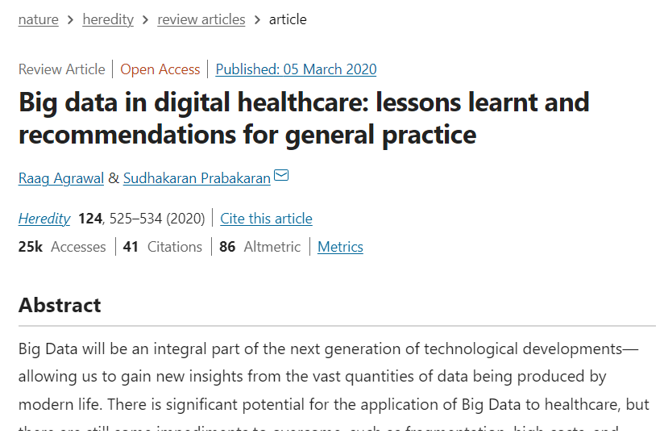
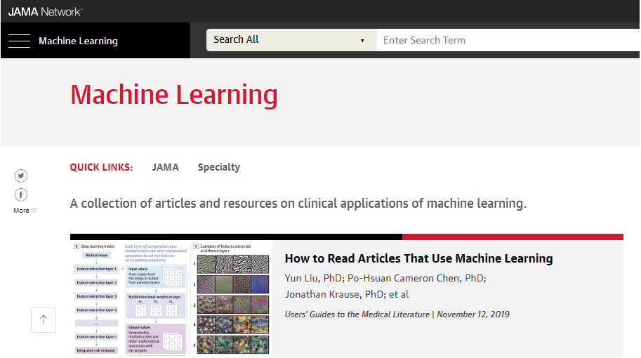
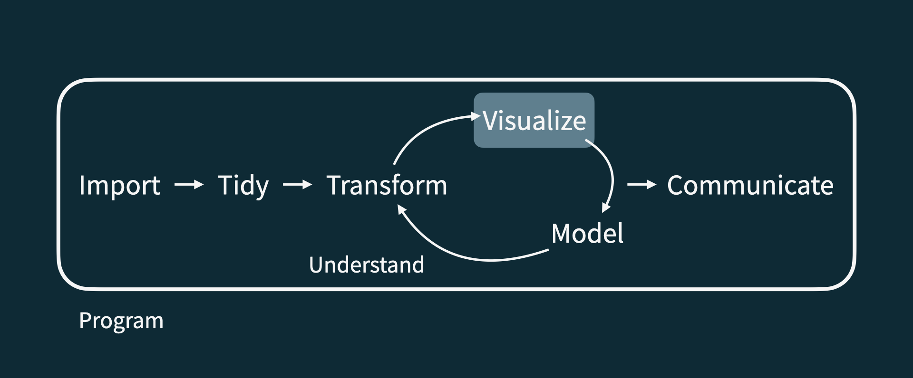

Sesión 1
Curso: Fundamentos R para Ciencia de Datos en Salud
Percy Soto-Becerra, M.D., M.Sc(c)
InkaStats Academy | Latin Data Science Solutions S.A.C.

Introducción a la Estadística y Ciencia de Datos
Agenda
Introducción a la Estadística y Ciencia de Datos
Análisis de datos reproducible
R y RStudio
Aspectos elementales de R y Rstudio
Datos y mundo actual




La crisis de replicabilidad de la Ciencia
(incluyendo Ciencias Médicas)

Ciencia de Datos
En general
La Ciencia de Datos es una disciplina que se dedica al estudio y aplicación de técnicas diversas (estadística, informática, etc.) para convertir datos crudos en información y conocimiento.
En este curso aprenderemos a hacer esto de manera ordenada.
Este es un curso introductorio con énfasis en pensamiento estadístico.
En salud
Ciencia de Datos en Salud (Health Data Science en inglés) es la ciencia y el arte de generar soluciones basadas en datos a través de la comprensión de problemas de salud complejos del mundo real, empleando el pensamiento crítico y el análisis para derivar conocimiento de los (grandes) datos.1
Análisis de datos reproducible
Agenda
Introducción a la Estadística y Ciencia de Datos
Análisis de datos reproducible
R y RStudio
Aspectos elementales de R y Rstudio
Checklist de reproducibilidad
¿Qué significa que un análisis de datos es “reproducible”?
A corto plazo
¿Las tablas y figuras se pueden reproducir del código y datos?
¿El código realmenet hace lo que quieres que haga?
¿Es claro por qué el código hace lo que hace?
A largo plazo
¿Puede el código ser usado con otros datos?
¿Puedes extender el código a otros usos?
Flujograma de ciencia de datos



Kit de herramientas para reproducibilidad
Flujo de trabajo reproducible
Scriptabilidad
Programación literaria (código, narrativa, salida en un solo lugar) Markdown
Versión de control Git / Github
- En este curso nos enfocaremos en
ScriptabilidadyProgramación literaria.
R y RStudio
Agenda
Introducción a la Estadística y Ciencia de Datos
Análisis de datos reproducible
R y RStudio
Aspectos elementales de R y Rstudio
R y RStudio
R es un
lenguaje de programaciónestadística de código abierto.R también es un entorno para computación estadística y gráfica.
Está potenciado con
paquetes.

El problema de R: su aspecto
RStudio: el chasis del carro
En resumen, R y RStudio
En resumen, R y RStudio
Jerga básica de R
Objeto:Cualquier abstracción en R. Los datos son objetos en R.
Función:Código capaz de realizar una acción específica con los datos. También es un objeto: un objeto que actúa sobre otros objetos.
Paquetes:Library en inglés. Conjunto de funciones que realizan acciones a menudo relacionadas en R.
Paquetes de R base:Conjunto de paquetes instalados por defecto en R.
Paquetes de R tidy:Conjunto de paquetes que siguen el estilo tidy en R.
Paquetes de R
Los
paquetesson lasunidades fundamentalesdel código reproducible en R.Al 13 de junio de 2022, hay
18 560 paquetesdisponibles.¡Trabajaremos con un pequeño (pero importante) conjunto de estos!
Cada paquete contiene una o más
funcionesque ejecutan tareas.¡Hay paquetes de todo tipo y para todos los gustos!
R y sus paquetes
En resumen: R, RStudio y sus paquetes
tidyverse
tidyverse.org
Tidyversees unacolección grande de paquetes de Rdiseñados para hacer ciencia de datos: Es unmetapaquete.- Todos los paquetes comparten una filosofía subyacente y una gramática común.
R, como todo lenguaje, tiene varios dialectos.
Dos dialectos predominan:
R baseyR tidy.R tidyse basa en la filosofía de tidyverse.
Usaremos este enfoque predominantemente y
R basecuando no tenga remplazo o sea más sencillo usarlo.
Aspectos elementales de R y Rstudio
Agenda
Introducción a la Estadística y Ciencia de Datos
Análisis de datos reproducible
R y RStudio
Aspectos elementales de R y Rstudio
Primero instale R, R Studio y R tools
Si aún no ha instalado R y RStudio, revise el tutorial de instalación de R que hemos preparado para el curso:
Pause el video, instale y vuelva cuando todo esté listo.
Nuestro turno
Ingrese al siguiente enlace https://cloud.r-project.org/ y descargue R.
Ingrese al siguiente enlace https://www.rstudio.com/products/rstudio/download/#download y descargue RStudio.
¿Es usuario de MS Windows?
- Ingrese al siguiente enlace https://cloud.r-project.org/ y descargue RTools.
¿Es usuario de Mac o Linux?
- No haga nada más.
10:00
Ventanas de RStudio
Código en scripts de R
El
códigose escribe en elScript, pero no se imprime.Los
resultadosse imprimen en laconsola.Aunque es útil usar la consola, es preferible usar herramientas de programación literaria:
- RMarkdown o Quarto.
R Markdown y Quarto
rmarkdown.rstudio.com
rmarkdownyquartopermiten a los usuarios de R escribir su código y prosa en documentos computacionales reproducibles.Por lo general, nos referimos a documentos R Markdown con la extensión
.Rmdy a los documentos Quarto con la extensión.qmd.
Archivo R Markdown (.Rmd) a PDF
R Markdown evolucionó a Quarto
- Recientemente, RStudio presentó Quarto: https://quarto.org/.
- Quarto es la
versión mejoradade RMarkdwon. - Si usaste RMarkdown, puedes ejecutar tus códigos en Quarto sin ningún problema.
- Quarto permite ejecutar código Python, Julia y Observable.
R Markdown y Quarto son muy flexibles
Herramientas de
programación literaria:- Legibles para la computadora y para el ser humano.
Útiles para alcanzar
reproducibilidad.También muy útiles para diversas actividades académicas:
Presentaciones académicas
Artículos científicos
Diseño de blogs, web u otra herramienta de difusión de conocimiento.
Quarto permite crear artículos
Quarto permite crear presentaciones
De hecho, los slides de este curso están hechas en Quarto
Quarto permite crear Website
¡Sí!, la web de este curso también está hecha en Quarto
Quarto permite crear Libros
Quizás para una futura edición del curso
Programación Literaria
¿Cómo usaremos Quarto en el curso?
Cada ejercicio / reporte / proyecto / tarea / etc. será hecho en un documento R Markdown aumentado: Quarto.
Siempre te proporcionaremos una
plantillade documento Quarto para iniciar.Las plantillas irán modificándose conforme avancemos el curso.
Las plantillas son simplemente eso, plantillas, para usarlas en su día a día no necesita pensar mucho en ellas ni entenderlas a detalle.
Yo entiendo menos del 20% de estas y aún así me sirven mucho para mi trabajo diario. ¡Sugiero comenzar haciendo lo mismo!
Partes de un documento Quarto / R Markdown

Hagamos una pausa
Tomemos un descanso de 5 minutos…
Estire las piernas …
Deje de ver las pantallas …
… cualquier , las del celular también.
05:00
@psotob91
https://github.com/psotob91
psotob@inkastats-academy.com
Fundamentos R para Ciencia de Datos en Salud - Sesión 1